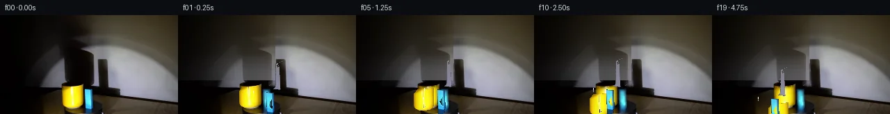

![首帧]()

Round 00
2026-11-05T19:02:48.680989+00:00像素候选变化代码 +388/−0inspection 更新
pixels adaf146a4f60d320 · code 9b49095697791935
查看本轮 generate.py 真实 diff
--- previous/generate.py
+++ current/generate.py
@@ -0,0 +1,388 @@
+"""PixelWorld-Text generation: rotating platform with mug and block."""
+import numpy as np
+from PIL import Image
+from pathlib import Path
+import sys
+
+sys.path.insert(0, str(Path(__file__).parent))
+from artifact_io import save
+
+CASE_DIR = Path(__file__).parent
+TMP = CASE_DIR / ".tmp"
+TMP.mkdir(exist_ok=True)
+
+# ── Load first frame ──
+arr = np.array(Image.open(CASE_DIR / "first_frame.png")).astype(np.uint8)
+H, W = 144, 256
+
+# ── Create object masks ──
+# Yellow mug mask: warm yellow/orange tones
+mug_mask = np.zeros((H, W), dtype=bool)
+# Core yellow: high R, high G, low B
+mug_mask |= (
+ (arr[:, :, 0].astype(int) > 150)
+ & (arr[:, :, 1].astype(int) > 100)
+ & (arr[:, :, 2].astype(int) < 100)
+ & (arr[:, :, 0].astype(int) > arr[:, :, 2].astype(int) * 1.5)
+)
+# Bright yellow highlights on mug (near-white yellow)
+mug_mask |= (
+ (arr[:, :, 0].astype(int) > 200)
+ & (arr[:, :, 1].astype(int) > 200)
+ & (arr[:, :, 2].astype(int) > 80)
+ & (arr[:, :, 2].astype(int) < 220)
+ & (arr[:, :, 0].astype(int) < 255)
+)
+
+# Blue block mask: blue dominant or bright specular on block
+block_mask = np.zeros((H, W), dtype=bool)
+# Blue pixels: B dominates R and G
+block_mask |= (
+ (arr[:, :, 2].astype(int) > 60)
+ & (arr[:, :, 2].astype(int) > arr[:, :, 0].astype(int) + 10)
+ & (arr[:, :, 2].astype(int) > arr[:, :, 1].astype(int) + 10)
+)
+# Bright white-blue specular highlights
+block_mask |= (
+ (arr[:, :, 0].astype(int) > 200)
+ & (arr[:, :, 1].astype(int) > 200)
+ & (arr[:, :, 2].astype(int) > 200)
+ & (arr[:, :, 2].astype(int) >= arr[:, :, 0].astype(int))
+)
+# Exclude mug pixels
+block_mask &= ~mug_mask
+
+# Refine: only keep connected components near the objects
+# The block is around rows 104-142, cols 100-140
+block_mask_clean = block_mask.copy()
+block_mask_clean[:100, :] = False
+block_mask_clean[:, :95] = False
+block_mask_clean[:, 145:] = False
+# But keep the top of the block that extends into the wall area
+block_mask_clean[:100, 100:145] = block_mask[:100, 100:145]
+
+# Refine mug: rows 100-135, cols 88-120
+mug_mask_clean = mug_mask.copy()
+mug_mask_clean[:98, :] = False
+mug_mask_clean[136:, :] = False
+mug_mask_clean[:, :85] = False
+mug_mask_clean[:, 122:] = False
+
+mug_mask = mug_mask_clean
+block_mask = block_mask_clean
+
+# Sanity check
+mug_count = mug_mask.sum()
+block_count = block_mask.sum()
+print(f"Mug pixels: {mug_count}, Block pixels: {block_count}")
+
+# ── Identify regions behind objects for background fill ──
+# Expand masks slightly to include edge blending zone
+mug_dilated = np.zeros((H, W), dtype=bool)
+block_dilated = np.zeros((H, W), dtype=bool)
+from scipy import ndimage
+mug_dilated = ndimage.binary_dilation(mug_mask, iterations=3)
+block_dilated = ndimage.binary_dilation(block_mask, iterations=3)
+combined_dilated = mug_dilated | block_dilated
+
… diff truncated; 301 more lines …